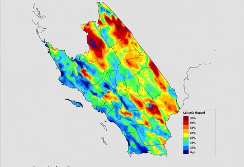
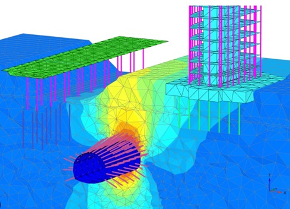
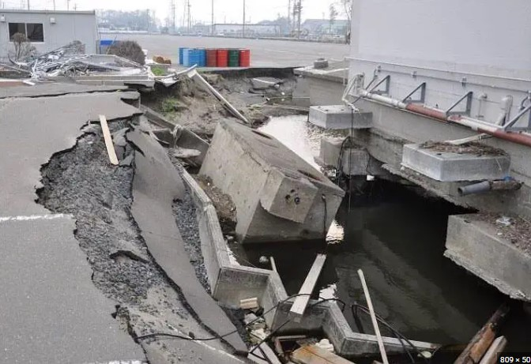

Seismic and Earthquake Engineering
Our Seismic Engineering Services
We provide comprehensive seismic and earthquake engineering services across all industry sectors. Our staff has extensive experience and expertise in seismic and geotechnical earthquake engineering. Below is a list of services in seismic engineering and consulting we provide.
- Seismic hazard assessments
- Site response analysis
- Dynamic soil-structure numerical modeling
- Dynamic deformation analysis, FLAC modeling, finite element modeling
- Acceleration-time history preparation
- Liquefaction potential assessment and mitigation design
- Machine vibration and soil dynamics assessments
Our Expertise
Seismic Hazard Assessment
Our firm provides specialized seismic hazard assessment services tailored to the unique conditions of each site. We perform site-specific seismic hazard assessments to quantify earthquake ground motions based on regional seismicity, local faulting, and subsurface conditions. Site response analyses are offered to evaluate how local soil and rock profiles influence earthquake ground motions. We also develop acceleration–time histories suitable for dynamic structural and geotechnical analyses, supporting informed, code-compliant design for residential, commercial, and infrastructure projects in seismically active regions.
Dynamic Numerical Modeling
We offer dynamic numerical modeling services to evaluate soil and rock behavior under seismic and other dynamic loading conditions. Using advanced numerical modeling software such as FLAC, PLAXIS, and RS2, we develop stress–strain models that capture nonlinear material response and site-specific subsurface conditions. These analyses are used to estimate dynamic stresses, dynamic deformations, and soil–structure interaction effects for foundations, retaining systems, slopes, and earth structures. Our modeling approach supports performance-based design and provides insight into expected ground and structural response beyond simplified analytical methods.
Liquefaction Assessment and Mitigation
We provide comprehensive liquefaction assessment and mitigation services to evaluate and manage liquefaction-related risks. Our work includes liquefaction triggering assessments using accepted simplified procedures, as well as advanced evaluations employing finite element modeling with sophisticated liquefaction constitutive models to better characterize soil behavior under seismic loading. When liquefaction hazards are identified, we develop practical and cost-effective mitigation designs tailored to project needs, including deep soil mixing, dynamic compaction, stone columns, pile foundations, and excavation and replacement.